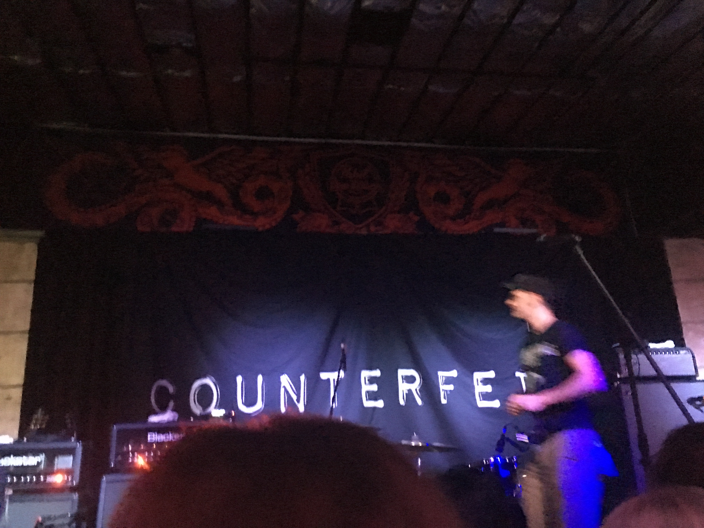
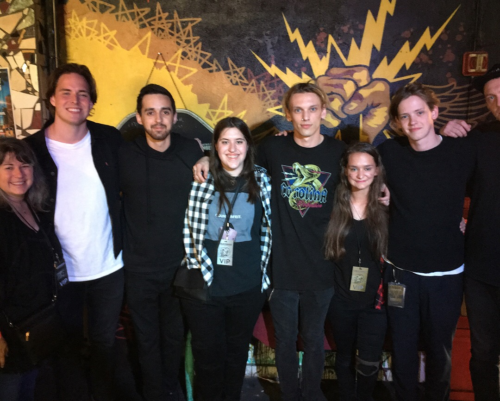

I love to read. I recently enjoyed the first book in the Illuminae Files by Amie Kaufman and Jay Kristoff.

My current favorite singer is Jamie Bower. I got to see him when he toured with his previous project, Counterfeit, in 2018.
 I want to use the skills I gain in this course and my other courses to work remotely with graphic and web design projects. I'd love to be able to grow my brand as I establish myself and grow my client list to eventually work with a team of designers. I really enjoy learning new skills with technology, so I always want to keep learning and evolving my skills.